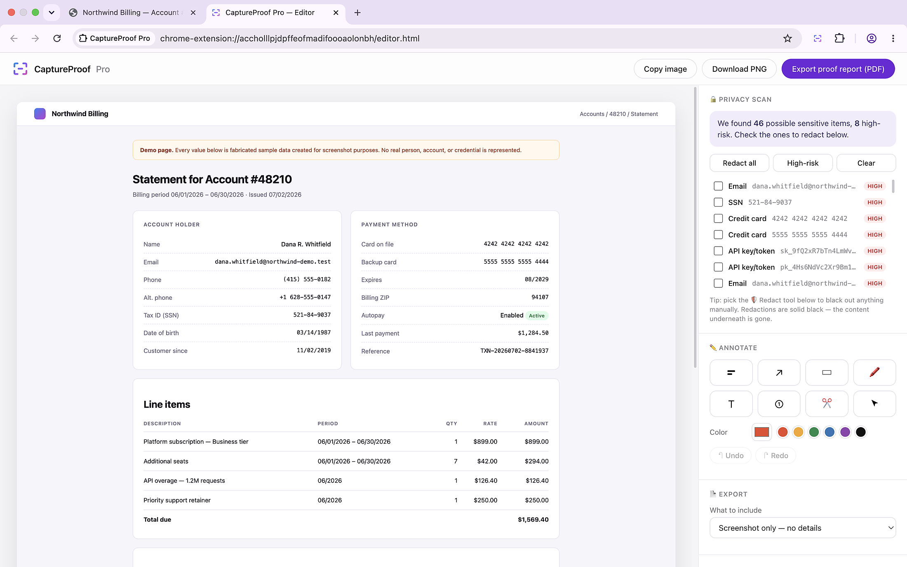
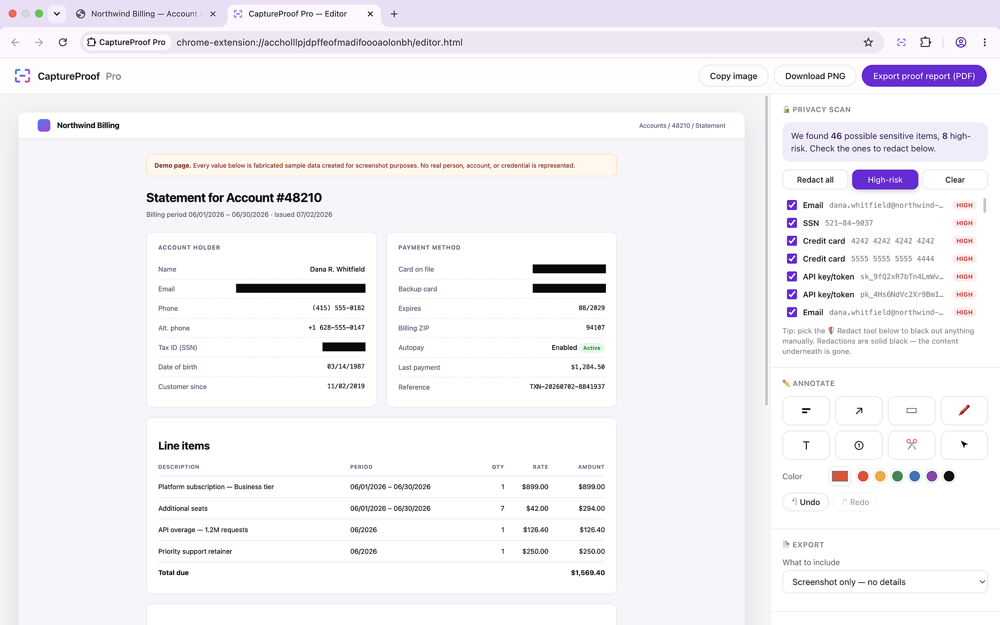

CaptureProof Pro
CaptureProof Pro
CaptureProof Pro
CaptureProof Pro
Capture a full web page, see what's sensitive on it, black it out in one click, and export a proof report. All of it inside your browser.
Add to Chrome See how it worksFour steps, all local. Nothing is sent anywhere at any point.
The full page, scrolled and stitched automatically. Or the visible area, or a region you drag.
Emails, phone numbers, card numbers, tax IDs, keys and tokens — found and rated, highest risk first.
All at once, high-risk only, or item by item. Solid black painted into the image. The pixels are gone.
A plain PNG, or a PDF proof report carrying the source URL, page title and capture time.
Screens from the extension, using a demo page of fabricated data.



The short version, in plain terms. The full policy has the detail.